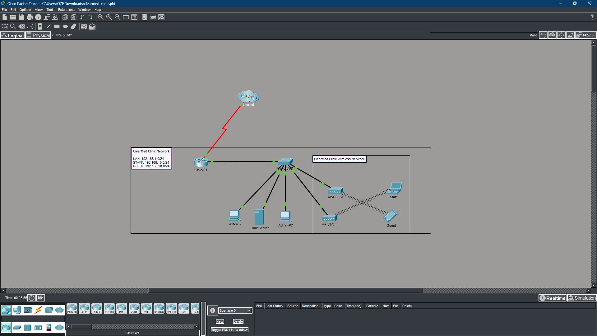
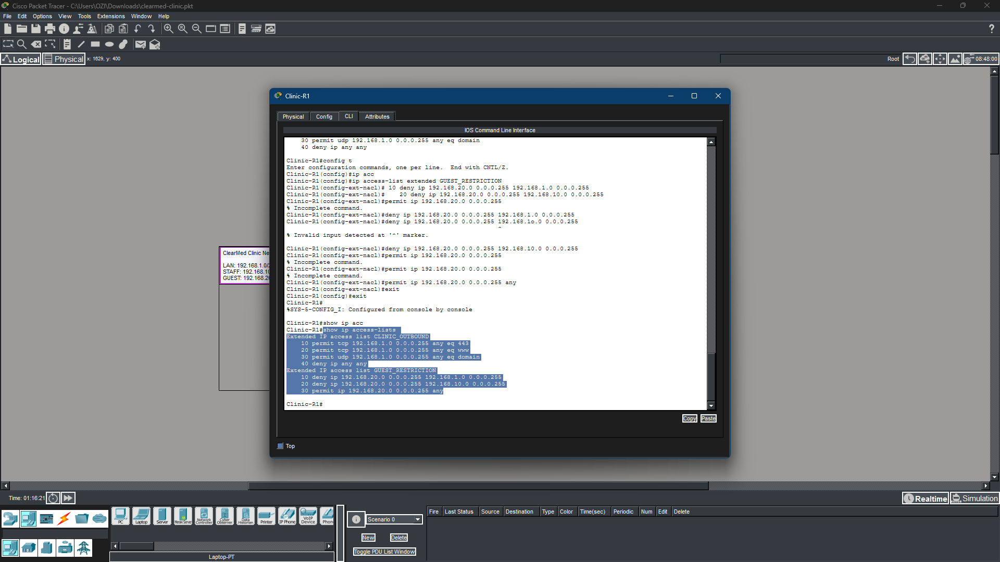
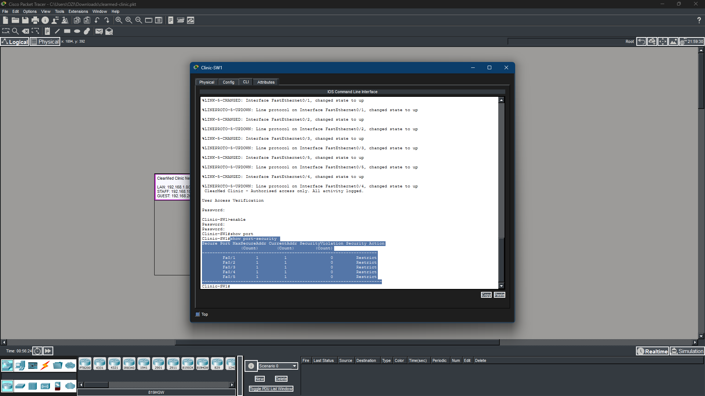

cat client_brief.txt
cat objectives.txt
cat tools.txt
| TOOL / TECHNOLOGY | PURPOSE |
|---|
cat skills.txt
cat topology.txt
[Internet]
|
[Clinic-R1: S0/0/0 WAN / G0/0: 192.168.1.1]
| (ACLs applied)
[Clinic-SW1: 192.168.1.2]
/ | | \
[Win-WS] [Linux] [Admin] [WAP]
192.168 .100 .50 |
.1.10/20 Staff VLAN 10: 192.168.10.x
(port security) Guest VLAN 20: 192.168.20.x (isolated)
| DEVICE | IP ADDRESS | ROLE | SECURITY CONTROL |
|---|---|---|---|
| Clinic-R1 | 192.168.1.1 | Gateway / firewall | ACLs APPLIED |
| Clinic-SW1 | 192.168.1.2 | Access layer switch | PORT SECURITY |
| Win-WS | 192.168.1.10 | Windows workstation | HARDENED |
| Linux Server | 192.168.1.100 | Ubuntu patient DB server | HARDENED |
| Admin-PC | 192.168.1.50 | Admin workstation | SSH MANAGEMENT |
| Staff Wi-Fi | 192.168.10.x | Staff wireless (VLAN 10) | WPA2 HIDDEN SSID |
| Guest Wi-Fi | 192.168.20.x | Patient waiting room (VLAN 20) | ISOLATED |
cat assessment_parts.txt
cat results.txt
ls ./evidence/

// Fig 1 - ClearMed Clinic network topology in Cisco Packet Tracer
// Fig 2 - show ip access-lists confirming ACL hit counts
// Fig 3 - show port-security on Clinic-SW1cat lessons_learned.txt